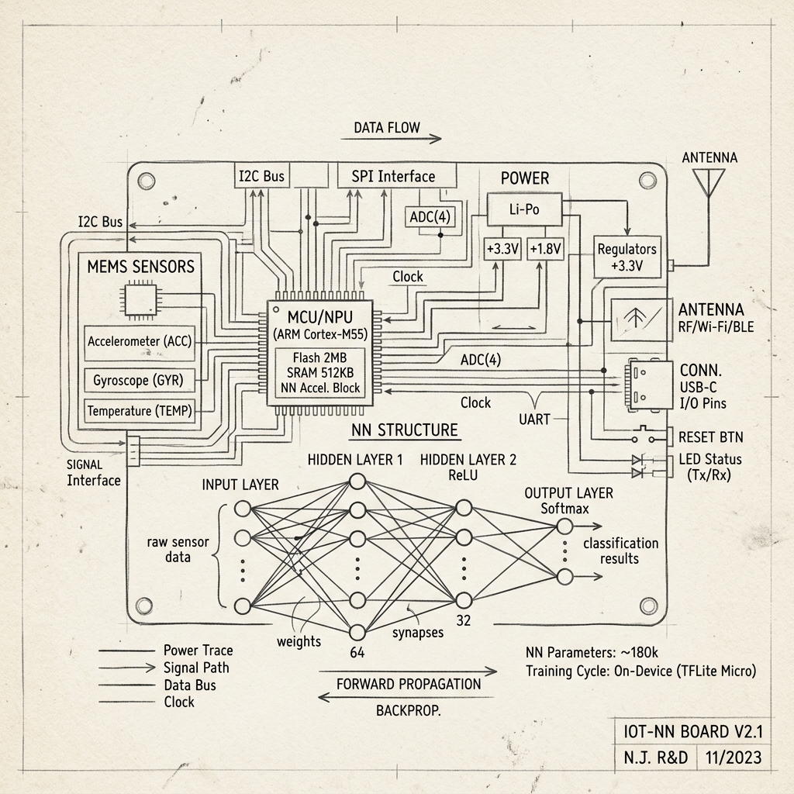

Visual foundation, design tokens, and analog interface system. Every component mimics natural paper interactions, drawing instruments, and laboratory materials used in security engineering and technical research.
00 // Design PrinciplesSheet 01
This system is built around the motif of a functional physical logbook. It consciously avoids generic developer-portfolio designs, dark cyberpunk neon glowing effects, and command-line terminal scripts. Instead, it relies on strict proportions, generous whitespace, analog references, and quiet tactile feedback to establish trust and engineering authority.
When utilizing this design system for pages in the future, adhere strictly to the grid structure, HSL color tokens, and structural components. Always leave significant margins and let the warm grid paper frame provide consistency.
System Note
All interactives use tactile transitions. Hovering cards lifts them slightly. Clicking elements imitates solid mechanical clicks.
01 // Warm Analog Color PalettesSheet 02
Colors mimic standard notebooks, charcoal drawing pencils, blue ballpoint pens, red correction markers, and translucent highlighters. Avoid highly saturated primaries, neon highlights, and gradients.
Paper Light
#faf8f5
Paper Base
#f6f3eb
Paper Cover/Desk
#eee8db
Charcoal Ink
#212121
Graphite Pencil
#616161
Blue Ink (Accent)
#2a5ca8
Red Pen (Accent)
#bd2a2a
Highlighter
#fef5cc
02 // Typographic HierarchySheet 03
Three specialized fonts combine to establish a functional, clear layout hierarchy resembling hand-marked schematics and printed journal papers.
Headings & Labels (IBM Plex Mono)
Heading 02 Sample Text
IBM Plex Mono - Semibold - Tight spacing
Body Text (Inter)
This is a paragraph of standard body text. Inter provides maximum readability on the warm, ruled paper background.
A blueprint standard box callout. Highlighted with a thick blue ink vertical margin. Used to summarize hardware testing parameters.
Critical Security Warning
Red margins represent critical failures, deprecated dependencies, or vulnerabilities located in standard static analyses.
Todo list
Measure loop current
Rebuild IoT gateway
Draft architecture
Ref
See Chapter 4 of the ENCODE framework guidelines for sequence mappings.
Fitted Cards, Clips & Photo Frames
Document Tucked in Page
This card utilizes a `.paper-clip` to simulate a document secured to the current journal page. The clip drops a soft shadow beneath it, adding depth.
Borders are deliberately thin and clean to support reading hierarchy.

Fig 1.2 — Prototype IoT Circuit
Chronological Log Entries & Timeline Nodes
July 01, 2026 @ 10:53
Laboratory Entry: Design System Setup
Category: System DesignLog: #001
Initiated structural styling parameters. Grid lines successfully set to blue-graph specifications. Spacing increments mapped to 8px base units. Responsive media configurations tested on mobile emulator viewports.
2026 - Present
Principal Cloud Architect
Researching distributed microservices and trust topologies.
2024 - 2026
Security Researcher
Audit of core operating systems and kernel-level drivers.
Status Badges, Tables & Lists
DraftPassedTestingFailedRunning
Technical documentation must utilize outline icons only.
Ensure all text contains high, accessible contrasts.
Avoid overlapping margins on smaller screens.
Test Parameter
Measured Value
Result
System Noise
-112 dBm
Passed
Latency Delta
14.2 ms
Passed
Input Voltage
1.08 V
Testing
Journal Code Excerpts
analyzer.pyPYTHON
# Static Entropy Checker
import math
def calculate_entropy(data):
if not data:
return 0
entropy = 0
for x in range(256):
p_x = float(data.count(chr(x))) / len(data)
if p_x > 0:
entropy += - p_x * math.log(p_x, 2)
return entropy